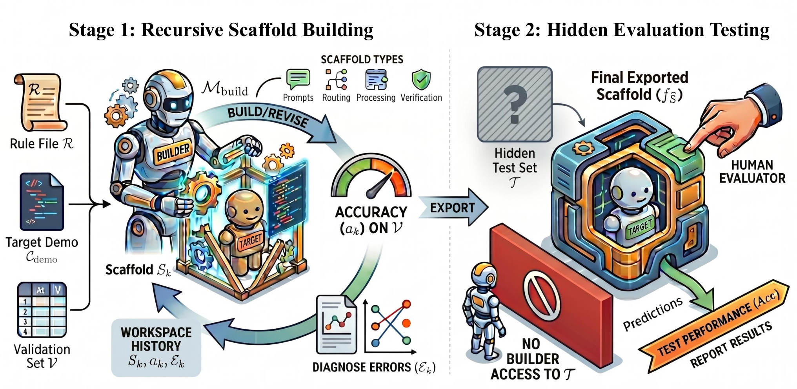
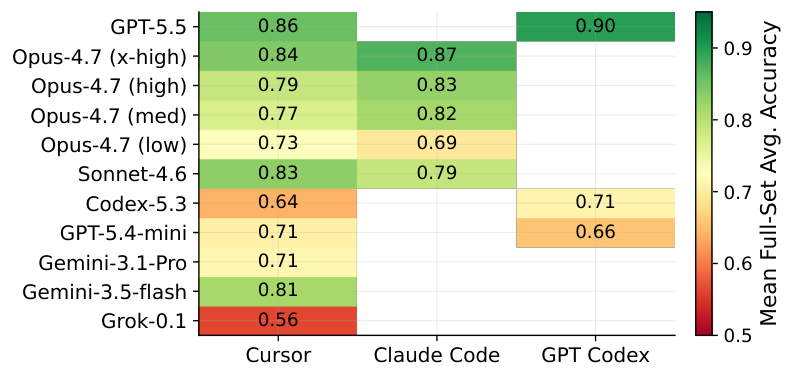

AI4AI at Test-Time: Strong-to-Weak Capability Transfer via Harnesses
TL;DR
- AI4AI at Test-Time (arXiv 2608.12307; Cheng Qian, Wenting Zhao, Liangwei Yang, et al.) asks whether distillation's strong-to-weak capability transfer can happen without touching the weak model's parameters: a strong builder model iteratively designs an inference-time harness (routing, prompt templates, deterministic solvers, exemplars, verification, format enforcement) for a fixed weak target, seeing only a 5% validation slice, then the frozen harness is evaluated on a hidden test set.
- It works startlingly well: the best scaffold nearly doubles GPT-5.4-mini's macro-average accuracy on four Theory-of-Mind benchmarks from 0.49 to 0.91, and every builder configuration yields positive net uplift.
- The mechanism is not "make the model think more": gains come from structure externalization, deterministic code offloading, and strict format enforcement — the builder moves unstable reasoning out of the target model entirely. As the author thread puts it: the essence of a harness is transfer of cognitive load.
Why this matters
This paper gives a name and a measurement protocol to something the whole agent-harness ecosystem does implicitly: when a frontier-model-authored scaffold makes a small model competent, capability has been transferred — through prompts, code, and control flow instead of gradients. Framing that as a peer of distillation matters for three reasons. First, economics: a harness is built once by an expensive model and reused indefinitely by a cheap one, with no training run, no data pipeline, and no new checkpoint to serve — the cheapest deployment path for "strong model capability at weak model prices." Second, it sharpens what harness engineering is: the paper's mechanism analysis says successful builders don't coach the target into better reasoning, they remove reasoning from the target's job description — routing by task subtype, compiling stable sub-procedures into deterministic code, and enforcing answer formats so the target's residual job is small and checkable. That's a design principle you can apply tomorrow. Third, it's a genuine self-improvement primitive: this is AI building better working conditions for AI, evaluated with the discipline (hidden test set, tiny validation budget) that most harness-evolution demos skip. The result also puts empirical teeth on the intuition behind this tracker's harness obsession: the same frozen weights can behave like two different systems depending on the scaffold around them.

Figure 1 from the paper: during recursive scaffold building, the builder refines the scaffold to improve target-model validation performance; at evaluation, the finalized scaffold runs with the fixed weak target on the hidden test set.The core idea
The setting is deliberately asymmetric. A strong builder \(M_{\text{build}}\) may write any inference-time apparatus around a fixed weak target \(M_{\text{tar}}\); the target's parameters never change, and the builder never sees the hidden test set \(\mathcal{T}\). The ideal scaffold is
where \(\operatorname{Acc}(S, M_{\text{tar}}; \mathcal{T})\) is the target's accuracy on \(\mathcal{T}\) when run inside scaffold \(S\). Since \(\mathcal{T}\) is hidden, the builder optimizes a proxy on the small validation set \(\mathcal{V}\) (5% of the data):
with \(\mathcal{S}_{\text{build}}\) the candidates the builder actually explores over its refinement rounds. The generalization gap between \(\hat{S}\) and \(S^\star\) is what forces real transfer: a scaffold that memorizes validation answers is useless on \(\mathcal{T}\), so a successful scaffold must capture reusable task structure and skills. The builder's initial workspace is \(\mathcal{W}_{0}=\{\mathcal{R},\mathcal{C}_{\text{demo}},\mathcal{V}\}\) — the task rules/instructions, demonstration cases, and the validation set.
Why Theory-of-Mind as the testbed? ToM tasks stress-test exactly what small models lack — nested belief tracking, perspective shifts, hidden information, Bayesian goal inference — yet contain latent structure (subtypes, decomposable state, symbolically checkable steps) that an external scaffold can exploit. The evaluation aggregates four ToM datasets into a 3,900-item hidden test set: BigToM (1,200; binary belief/goal/action questions), Hi-ToM (1,200; nested beliefs of recursion order 0–4 with deception and multi-room object tracking), MMToM-QA (600; Bayesian goal/belief inference from action traces), and MuMA-ToM (900; 3-choice multi-agent questions), all text-format.
How it works
# Strong-to-weak scaffold building (Algorithm 1, abridged)
Given: builder M_build, frozen target M_tar,
workspace W_0 = {rules R, demos C_demo, validation V (5%)}
S_0 = M_build.draft_scaffold(W_0)
for round r = 1..R:
acc_r, errors_r = run(M_tar inside S_{r-1}, on V)
S_r = M_build.refine(S_{r-1}, errors_r)
# typical edits observed:
# - route items by benchmark/subtype to specialized paths
# - compile stable sub-procedures into deterministic code
# (state tracking, belief updates, answer extraction)
# - add few-shot exemplars where routing is ambiguous
# - add verification passes + strict output-format enforcement
finalize S_R → evaluate M_tar inside S_R on hidden test T (3,900 items)
The scaffold space is intentionally broad — "any combination of task routing, prompt templates, deterministic solvers, few-shot exemplars, verification passes, or format enforcement." The study then varies four factors: the builder (frontier models from multiple families — the thread names GPT-5.5, Claude Opus, and Gemini among them), the agentic platform the builder works through, the builder's reasoning effort tier, and the target (GPT-5.4-mini as the main weak target; Gemini-3.5-flash as a stronger-target control).

Figure 2 from the paper: (a) mean accuracy per builder–platform configuration (blank cells not run); (b) builder-level means with individual runs as platform-colored markers; the dashed line is the unscaffolded reference baseline.Results
- Headline: the best scaffold lifts GPT-5.4-mini from 0.49 to 0.91 macro-average — a +0.42 absolute gain — and every builder configuration yields positive net uplift. The thread adds that the scaffolded mini (91.2% at best, from 48.8%) even exceeds bare GPT-5.4 (from the thread — verify in the paper).
- Where the gains come from: the paper's attribution is unusually crisp. Gains are driven less by more validation data, more sampling, or longer target reasoning, and more by structure externalization, deterministic offloading, and strict format enforcement. On BigToM the best scaffolds effectively compile the benchmark: they discover the answer is fully determined by structured rules over the narrative, turning the task into executable skills. On the other three benchmarks, gains reflect genuine reduction of the target's reasoning burden rather than a shortcut.
- Scaling behaviors: builder reasoning effort improves scaffold quality monotonically across effort tiers — harness design quality is itself a capability that scales with thinking budget. Platform effects are modest relative to builder-model effects: who designs matters more than which agent framework they design in.
- Who benefits: the weaker the target, the larger the gain — GPT-5.4-mini gains more than the stronger Gemini-3.5-flash target. Scaffolding is a capability equalizer, not a uniform multiplier.
- What still fails: residual errors concentrate in the hardest regimes — Hi-ToM items with recursion depth ≥ 2 and Bayesian goal-inference subtypes. Externalized structure runs out where the irreducibly hard inference lives.
How it connects
- Reason Wide, Not Deep (Microsoft) — the closest neighbor in the distillation category: amortize a strong model's reasoning into reusable skills for cheap execution. AI4AI generalizes the artifact from skills to whole harnesses and formalizes the hidden-test protocol.
- SKILL-KD — added the same day: teacher-student behavioral diffs distilled into verified skill patches, i.e., the same strong-to-weak transfer channel with a training-free artifact; AI4AI is the benchmark-rigorous evaluation of that channel's ceiling.
- The Bitter Lesson of Tool Calling — independent evidence for AI4AI's core mechanism: models orchestrating work through code beat models emitting stepwise calls. Here the builder writes the code so the weak target doesn't have to.
- AutoDesign — today's companion tutorial: same recursive propose-evaluate-refine loop over a harness, but self-improvement (model improves its own harness) vs transfer (strong model improves a weaker model's harness). AI4AI's monotonic builder-effort result suggests these two settings will diverge with scale: the strongest builders make the best scaffolds, for whoever runs them.
- Harness Delta Attribution and Rethinking Harness Evolution — the caution that applies directly: the BigToM finding (the scaffold compiles the benchmark) is exactly the shortcut-learning those posts warn about, here caught and labeled by the authors themselves rather than hidden in an aggregate.
- Harness Rankings Are Model-Dependent — complementary result: harnesses aren't model-neutral, and AI4AI shows the dependency is exploitable — you can design for a specific weak model rather than hoping a generic harness fits.
Critical take
The BigToM result cuts both ways and the authors deserve credit for surfacing it: when a scaffold "fully exploits" a benchmark through compilable rules, the 0.91 macro-average partially measures benchmark brittleness, not transferred cognition — a scaffold-vs-benchmark arms race would deflate the headline number. Relatedly, ToM benchmarks are template-generated with strong latent regularity; the deterministic-offloading mechanism should transfer to messier domains (coding, research tasks), but the magnitude almost certainly won't, and nothing here tests cross-domain scaffold reuse — every scaffold is built and evaluated within one task family. Second, "5% validation" on 3,900 items is ~195 labeled examples per run; that's cheap, but the multi-round refinement loop burns frontier-builder tokens, and the paper's cost accounting (builder tokens vs would-be distillation cost) is the comparison I most wanted and didn't see stated crisply. Third, the failure concentration at Hi-ToM depth ≥ 2 is a useful negative result: harnesses transfer structure, not capability — when the residual inference is genuinely hard, the weak target is still the weak target. That's the honest boundary of the "AI4AI at test time" thesis, and it's also why this complements rather than replaces weight-space distillation: use harness transfer where load can be externalized, gradients where it can't.
If you remember three things
- Distillation without gradients: a strong builder optimizing \(\hat{S}=\arg\max_{S}\operatorname{Acc}(S,M_{\text{tar}};\mathcal{V})\) on 5% validation transfers enough capability to nearly double a weak model's hidden-test accuracy (0.49 → 0.91), with every builder configuration net-positive.
- Good harnesses transfer cognitive load, not pep talks: the measured gains come from routing, deterministic code, and format enforcement — moving reasoning out of the model — not from making the target think longer or sample more.
- Builder strength is the binding constraint (effort improves scaffolds monotonically; platform barely matters), and weaker targets gain most — so the strong-model-designs-for-small-model pattern gets more valuable as the frontier advances.